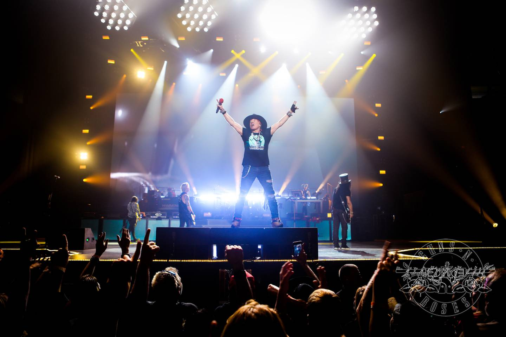

2021-22 Tour es una gira mundial realizada por el grupo estadounidense de hard rock Guns N' Roses, que dio comienzo el 31 de enero de 2020. Después de ese primer show en Miami junto con el Super Bowl LIV, la banda tenía programada una gira por Centroamérica y Sudamérica en marzo y abril. La primera fecha de la gira se llevó a cabo según lo programado el 14 de marzo de 2020 en la Ciudad de México como parte del "Festival Vive Latino", a pesar del rápido avance de la Pandemia por el coronavirus.Sin embargo, dos días después, el 16 de marzo de 2020, se anunció que las fechas restantes de América Latina se habían pospuesto hasta octubre-diciembre de 2020.
El 11 de mayo de 2020, la banda anunció en Twitter que la etapa europea de la gira, que originalmente estaba programada para comenzar el 20 de mayo en Lisboa, Portugal, había sido cancelada.3
El 20 de mayo de 2020, la banda anunció que la etapa norteamericana de la gira estaba "siendo reprogramada por precaución".La etapa pospuesta estaba originalmente programada para comenzar el 4 de julio en Milwaukee y terminar el 26 de agosto en Missoula, Montana.
La aparición ahora pospuesta del 8 de agosto en el SoFi Stadium en el área de Los Ángeles habría sido (además de ser el regreso de la banda a su ciudad natal) el primer show de rock and roll en el nuevo estadio.
El 19 de noviembre de 2020, la banda anunció 8 nuevas fechas en Oceanía. La gira de Oceanía está programada para comenzar el 6 de noviembre de 2021 en Gold Coast, Australia, antes de concluir el 24 de noviembre de 2021 en Perth, Australia.
La banda venía de terminar su gira mundial exitosa llamada Not in This Lifetime... Tour con casi 700 millones de dólares de taquilla, esta gira figura en el segundo puesto de las más recaudadoras de la historia.